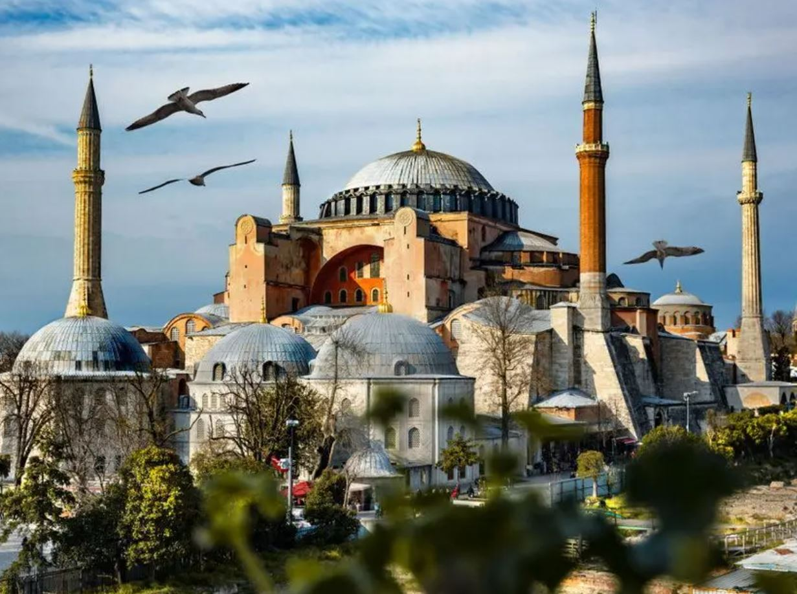

Ayasofya Camii
Ayasofya Camii Hakkında
Ayasofya Camii Hakkında
Ayasofya (anlamı: "Kutsal Bilgelik"; Grekçe: Ἁγία Σοφία, romanize: Agia Sofia), eski adıyla Kutsal Bilgelik Kilisesi ve Ayasofya Müzesi veya günümüzdeki resmî adıyla Ayasofya-i Kebîr Câmi-i Şerîfi (Kutsal Büyük Ayasofya Camii)[4][5], İstanbul'da yer alan bir cami ve eski bazilika, katedral ve müzedir. Bizans İmparatoru I. Justinianus tarafından, 532-537 yılları arasında İstanbul'un tarihî yarımadasındaki eski şehir merkezine inşa ettirilmiş bazilika planlı bir patrik katedrali olmuştur. 1453 yılında İstanbul'un Osmanlılar tarafından fethedilmesinden sonra II. Mehmed tarafından camiye dönüştürülmüştür. Mustafa Kemal Atatürk tarafından 1934 yılında yayımlanan Bakanlar Kurulu Kararnamesi ile müzeye dönüştürülmüş, kazı ve tadilat çalışmaları başlatılmış ve 1935'ten 2020'ye kadar müze olarak hizmet vermiştir. 2020 yılında ise müze statüsü iptal edilerek cami statüsü verilmiştir.
Ayasofya, mimari bakımdan merkezî planı birleştiren kubbeli bazilika tipinde bir yapı olup, kubbe geçişi ve taşıyıcı sistem özellikleriyle mimarlık tarihinde önemli bir dönüm noktası olarak ele alınır. Hristiyanlar için hem sembolik hem de eksen olma anlamının yanında, turistik ve ruhsal bir çekim merkezidir.
Ayasofya adındaki "Aya" sözcüğü "kutsal" anlamına gelir. "Sofya" sözcüğü ise Grekçede "bilgelik" anlamındaki sophos sözcüğünden gelir.[6] Dolayısıyla "Aya Sofya" adı, Nasıralı İsa'ya atfen "Kutsal Bilgelik" ya da "İlahî Bilgelik" anlamına gelmekte olup Hristiyan ilahiyatında Tanrı'nın üç niteliğinden biri sayılır.[7][8] Miletli İsidoros ve Trallesli Antemius'un[3][9] yönettiği Ayasofya'nın inşaatında yaklaşık 10.000 işçinin[10][11][12] çalıştığı ve İmparator I. Jüstinyen'in bu iş için büyük bir servet harcadığı belirtilir.[13] Bu çok eski binanın bir özelliği, yapımında kullanılan bazı sütun, kapı ve taşların binadan daha eski yapı ve tapınaklardan getirilmiş olmasıdır.[14][15]
Bizans İmparatorluğu döneminde Ayasofya, büyük bir "kutsal emanetler" zenginliğine sahipti. Bu emanetlerden biri de 15 metre yüksekliğindeki gümüş ikonostasis idi.[16] Konstantinopolis Patriği'nin kilisesi ve Doğu Ortodoks Kilisesi'nin 1000 yıl boyunca merkezi olan Ayasofya, 1054 yılında Patrik I. Mihail'in Papa IX. Leo tarafından aforoz edilmesine şahitlik etmiş olup, bu olay, genel olarak "Schisma"nın, yani Hristiyanlık tarihindeki en önemli olaylardan biri olan Doğu ve Batı kiliselerinin ayrılmasının başlangıcı sayılır.
1453 yılında kilise, Osmanlı padişahı II. Mehmed tarafından camiye dönüştürüldükten sonra mozaiklerinden insan figürleri içerenler tahrip edilmemiş (içermeyenlerse olduğu gibi bırakılmıştır), yalnızca ince bir sıvayla kaplanmış ve yüzyıllarca sıva altında kalan mozaikler, bu sayede doğal ve yapay tahribattan kurtulabilmiştir. Cami, müzeye dönüştürülürken sıvaların bir kısmı çıkarılmış ve mozaikler yine gün ışığına çıkarılmıştır. Günümüzde görülen Ayasofya binası, aslında aynı yere üçüncü kez inşa edilen kilise olduğundan "Üçüncü Ayasofya" olarak da bilinir. İlk iki kilise isyanlar sırasında yıkılmıştır. Döneminin en geniş kubbesi olan Ayasofya'nın merkezî kubbesi, Bizans döneminde bir kez (7 Mayıs 558 tarihinde) çökmüş,[17][18] Osmanlı başmimarı Mimar Sinan'ın binaya payandaları eklemesinden itibaren de hiç çökmemiştir.